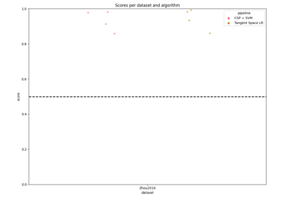
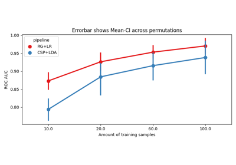
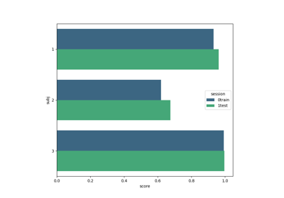

moabb.paradigms.LeftRightImagery¶
- class moabb.paradigms.LeftRightImagery(**kwargs)[source]¶
Motor Imagery for left hand/right hand classification
Metric is ‘roc_auc’
- Attributes:
datasetsProperty that define the list of compatible datasets
scoringProperty that defines scoring metric (e.g.
Methods
get_data(dataset[, subjects, return_epochs, ...])Return the data for a list of subject.
is_valid(dataset)Verify the dataset is compatible with the paradigm.
prepare_process(dataset)Prepare processing of raw files
process_raw(raw, dataset[, return_epochs, ...])Process one raw data file.
used_events
- property scoring¶
Property that defines scoring metric (e.g. ROC-AUC or accuracy or f-score), given as a sklearn-compatible string or a compatible sklearn scorer.
Examples using moabb.paradigms.LeftRightImagery¶

Benchmarking with MOABB



Within Session Motor Imagery with Learning Curve
Within Session Motor Imagery with Learning Curve


Tutorial 1: Simple Motor Imagery
Tutorial 1: Simple Motor Imagery